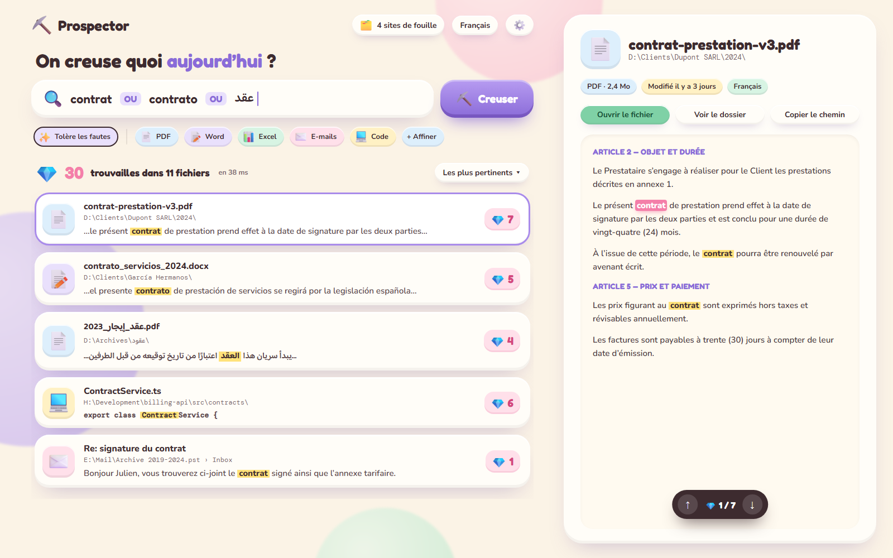
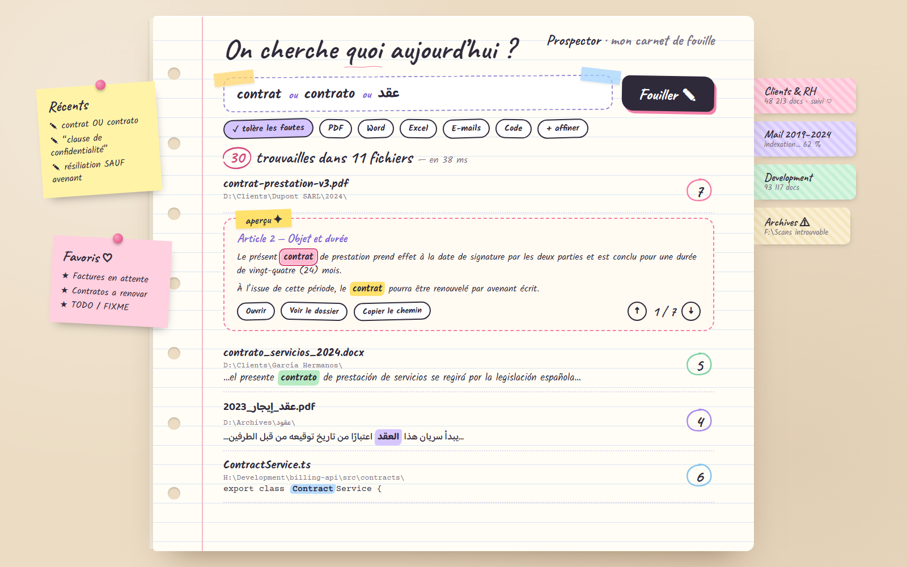
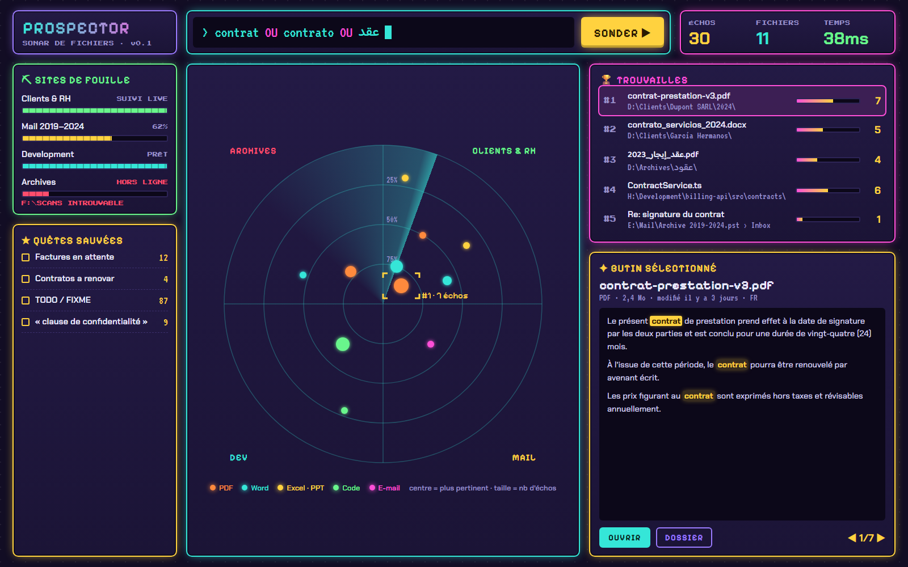
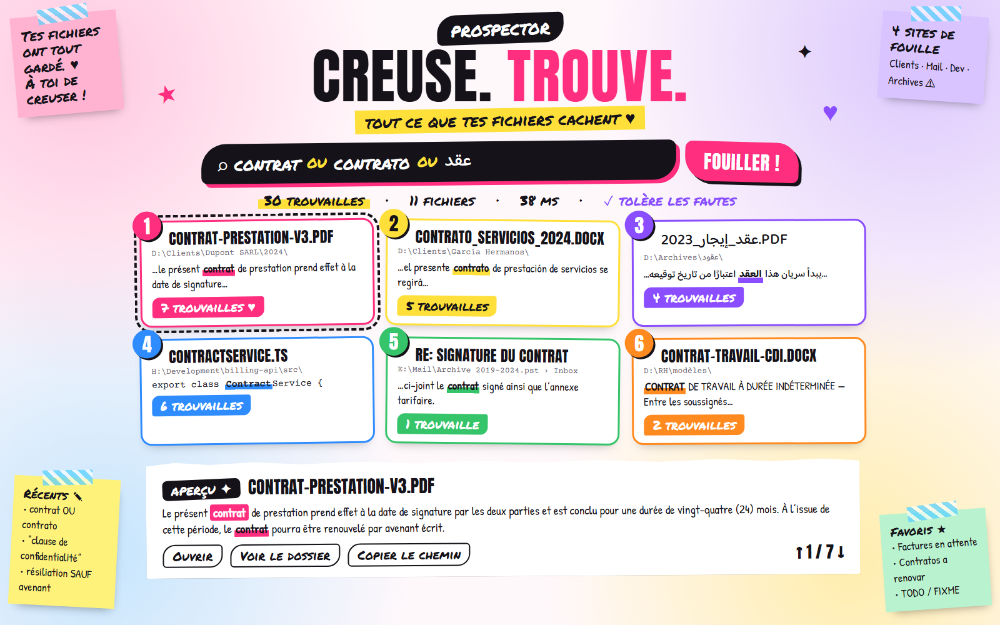
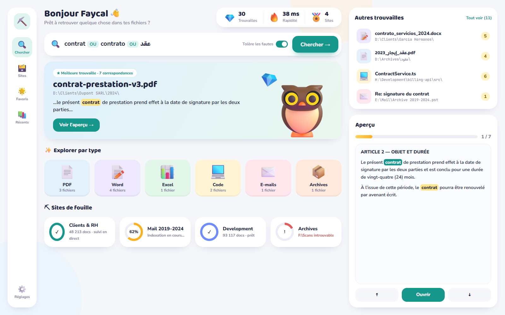
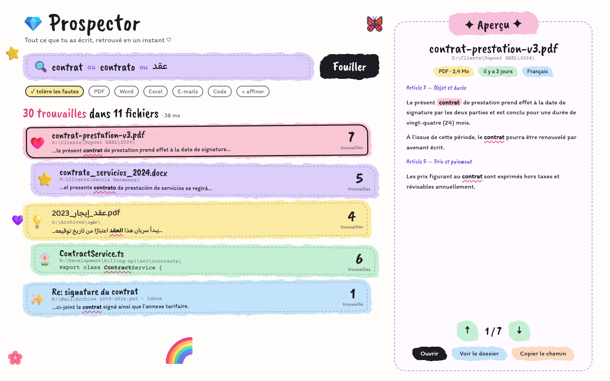
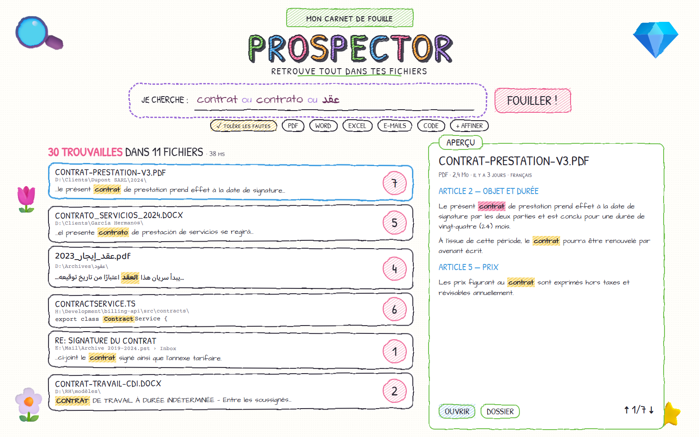
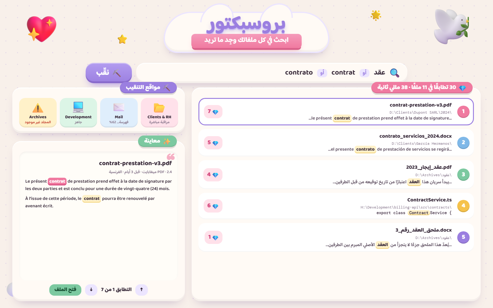

Prospector — 8 maquettes, une par référence
Cliquer sur une image pour l’agrandir. Les maquettes sont statiques (données factices FR/ES/AR).

A · Clay SpotlightRéf. craft.png (Clayful) — pâte à modeler 3D, barre centrale, aperçu flottantHTML

B · Carnet de fouilleRéf. notebook.png — bullet journal, surligneur, onglets washi, post-itsHTML

C · Sonar QuestRéf. image2.png — jeu vidéo néon pixel, radar sonar des résultatsHTML

D · Scrapbook / moodboardRéf. image1.png — collage, post-its, titres au feutre, cartes numérotéesHTML

E · App douce / dashboardRéf. image3.png — cartes blanches, mascotte hibou, tuiles pastel, anneaux de progressionHTML

F · Bandeaux pinceauRéf. image4.png — rubans pastel au pinceau, écriture manuscrite, doodlesHTML

G · Crayons de couleurRéf. image5.png — lettres hachurées, traits tremblés, cadre pointilléHTML

H · Pâte à modeler en arabe (RTL)Réf. image.png — infographie clay, nuage + ruban, interface entièrement en arabeHTML